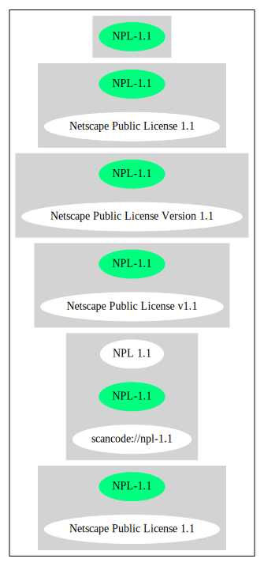

Key |
Value |
|---|---|
Fullname |
Netscape Public License v1.1 |
Shortname |
NPL-1.1 |
Rating |
Unknown, probably Attention or Stop or No-Go |
Classification |
WeakCopyleft |
Has Patent Hint |
False |
Other Names:
scancode://npl-1.1
NPL 1.1
Netscape Public License 1.1
↓“Google Classification is RESTRICTED” (source: Google OSS Policy)
Homepage: http://www.mozilla.org/MPL/NPL-1.1.html
SPDX: http://spdx.org/licenses/NPL-1.1.json
http://www.mozilla.org/MPL/NPL/1.1/
http://www.mozilla.org/NPL/
AMENDMENTS
The Netscape Public License Version 1.1 ("NPL") consists of the Mozilla Public License Version 1.1 with the following Amendments, including Exhibit A-Netscape Public License. Files identified with "Exhibit A-Netscape Public License" are governed by the Netscape Public License Version 1.1.
Additional Terms applicable to the Netscape Public License.
I. Effect.
These additional terms described in this Netscape Public License -- Amendments shall apply to the Mozilla Communicator client code and to all Covered Code under this License.
II. ''Netscape's Branded Code'' means Covered Code that Netscape distributes and/or permits others to distribute under one or more trademark(s) which are controlled by Netscape but which are not licensed for use under this License.
III. Netscape and logo.
This License does not grant any rights to use the trademarks "Netscape'', the "Netscape N and horizon'' logo or the "Netscape lighthouse" logo, "Netcenter", "Gecko", "Java" or "JavaScript", "Smart Browsing" even if such marks are included in the Original Code or Modifications.
IV. Inability to Comply Due to Contractual Obligation.
Prior to licensing the Original Code under this License, Netscape has licensed third party code for use in Netscape's Branded Code. To the extent that Netscape is limited contractually from making such third party code available under this License, Netscape may choose to reintegrate such code into Covered Code without being required to distribute such code in Source Code form, even if such code would otherwise be considered ''Modifications'' under this License.
V. Use of Modifications and Covered Code by Initial Developer.
V.1. In General.
The obligations of Section 3 apply to Netscape, except to the extent specified in this Amendment, Section V.2 and V.3.
V.2. Other Products.
Netscape may include Covered Code in products other than the Netscape's Branded Code which are released by Netscape during the two (2) years following the release date of the Original Code, without such additional products becoming subject to the terms of this License, and may license such additional products on different terms from those contained in this License.
V.3. Alternative Licensing.
Netscape may license the Source Code of Netscape's Branded Code, including Modifications incorporated therein, without such Netscape Branded Code becoming subject to the terms of this License, and may license such Netscape Branded Code on different terms from those contained in this License.
VI. Litigation.
Notwithstanding the limitations of Section 11 above, the provisions regarding litigation in Section 11(a), (b) and (c) of the License shall apply to all disputes relating to this License.
EXHIBIT A-Netscape Public License.
''The contents of this file are subject to the Netscape Public License Version 1.1 (the "License"); you may not use this file except in compliance with the License. You may obtain a copy of the License at http://www.mozilla.org/NPL/
Software distributed under the License is distributed on an "AS IS" basis, WITHOUT WARRANTY OF ANY KIND, either express or implied. See the License for the specific language governing rights and limitations under the License.
The Original Code is Mozilla Communicator client code, released March 31, 1998.
The Initial Developer of the Original Code is Netscape Communications Corporation. Portions created by Netscape are Copyright (C) 1998-1999 Netscape Communications Corporation. All Rights Reserved.
Contributor(s): .
Alternatively, the contents of this file may be used under the terms of the license (the "[ ] License"), in which case the provisions of [ ] License are applicable instead of those above. If you wish to allow use of your version of this file only under the terms of the [ ] License and not to allow others to use your version of this file under the NPL, indicate your decision by deleting the provisions above and replace them with the notice and other provisions required by the [ ] License. If you do not delete the provisions above, a recipient may use your version of this file under either the NPL or the [ ] License."{
"__impliedNames": [
"NPL-1.1",
"Netscape Public License v1.1",
"scancode://npl-1.1",
"NPL 1.1",
"Netscape Public License 1.1"
],
"__impliedId": "NPL-1.1",
"__hasPatentHint": false,
"facts": {
"SPDX": {
"isSPDXLicenseDeprecated": false,
"spdxFullName": "Netscape Public License v1.1",
"spdxDetailsURL": "http://spdx.org/licenses/NPL-1.1.json",
"_sourceURL": "https://spdx.org/licenses/NPL-1.1.html",
"spdxLicIsOSIApproved": false,
"spdxSeeAlso": [
"http://www.mozilla.org/MPL/NPL/1.1/"
],
"_implications": {
"__impliedNames": [
"NPL-1.1",
"Netscape Public License v1.1"
],
"__impliedId": "NPL-1.1",
"__isOsiApproved": false,
"__impliedURLs": [
[
"SPDX",
"http://spdx.org/licenses/NPL-1.1.json"
],
[
null,
"http://www.mozilla.org/MPL/NPL/1.1/"
]
]
},
"spdxLicenseId": "NPL-1.1"
},
"Scancode": {
"otherUrls": [
"http://www.mozilla.org/MPL/NPL/1.1/",
"http://www.mozilla.org/NPL/"
],
"homepageUrl": "http://www.mozilla.org/MPL/NPL-1.1.html",
"shortName": "NPL 1.1",
"textUrls": null,
"text": "AMENDMENTS\nThe Netscape Public License Version 1.1 (\"NPL\") consists of the Mozilla Public License Version 1.1 with the following Amendments, including Exhibit A-Netscape Public License. Files identified with \"Exhibit A-Netscape Public License\" are governed by the Netscape Public License Version 1.1.\n\nAdditional Terms applicable to the Netscape Public License.\n\nI. Effect. \nThese additional terms described in this Netscape Public License -- Amendments shall apply to the Mozilla Communicator client code and to all Covered Code under this License.\nII. ''Netscape's Branded Code'' means Covered Code that Netscape distributes and/or permits others to distribute under one or more trademark(s) which are controlled by Netscape but which are not licensed for use under this License.\n\nIII. Netscape and logo. \nThis License does not grant any rights to use the trademarks \"Netscape'', the \"Netscape N and horizon'' logo or the \"Netscape lighthouse\" logo, \"Netcenter\", \"Gecko\", \"Java\" or \"JavaScript\", \"Smart Browsing\" even if such marks are included in the Original Code or Modifications.\n\nIV. Inability to Comply Due to Contractual Obligation. \nPrior to licensing the Original Code under this License, Netscape has licensed third party code for use in Netscape's Branded Code. To the extent that Netscape is limited contractually from making such third party code available under this License, Netscape may choose to reintegrate such code into Covered Code without being required to distribute such code in Source Code form, even if such code would otherwise be considered ''Modifications'' under this License.\n\nV. Use of Modifications and Covered Code by Initial Developer.\n\nV.1. In General. \nThe obligations of Section 3 apply to Netscape, except to the extent specified in this Amendment, Section V.2 and V.3.\nV.2. Other Products. \nNetscape may include Covered Code in products other than the Netscape's Branded Code which are released by Netscape during the two (2) years following the release date of the Original Code, without such additional products becoming subject to the terms of this License, and may license such additional products on different terms from those contained in this License.\n\nV.3. Alternative Licensing. \nNetscape may license the Source Code of Netscape's Branded Code, including Modifications incorporated therein, without such Netscape Branded Code becoming subject to the terms of this License, and may license such Netscape Branded Code on different terms from those contained in this License. \n \n\nVI. Litigation. \nNotwithstanding the limitations of Section 11 above, the provisions regarding litigation in Section 11(a), (b) and (c) of the License shall apply to all disputes relating to this License.\n\nEXHIBIT A-Netscape Public License.\n\n\n''The contents of this file are subject to the Netscape Public License Version 1.1 (the \"License\"); you may not use this file except in compliance with the License. You may obtain a copy of the License at http://www.mozilla.org/NPL/\nSoftware distributed under the License is distributed on an \"AS IS\" basis, WITHOUT WARRANTY OF ANY KIND, either express or implied. See the License for the specific language governing rights and limitations under the License.\n\nThe Original Code is Mozilla Communicator client code, released March 31, 1998.\n\nThe Initial Developer of the Original Code is Netscape Communications Corporation. Portions created by Netscape are Copyright (C) 1998-1999 Netscape Communications Corporation. All Rights Reserved.\n\nContributor(s): .\n\n\nAlternatively, the contents of this file may be used under the terms of the license (the \"[ ] License\"), in which case the provisions of [ ] License are applicable instead of those above. If you wish to allow use of your version of this file only under the terms of the [ ] License and not to allow others to use your version of this file under the NPL, indicate your decision by deleting the provisions above and replace them with the notice and other provisions required by the [ ] License. If you do not delete the provisions above, a recipient may use your version of this file under either the NPL or the [ ] License.\"",
"category": "Copyleft Limited",
"osiUrl": null,
"owner": "Mozilla",
"_sourceURL": "https://github.com/nexB/scancode-toolkit/blob/develop/src/licensedcode/data/licenses/npl-1.1.yml",
"key": "npl-1.1",
"name": "Netscape Public License 1.1",
"spdxId": "NPL-1.1",
"notes": null,
"_implications": {
"__impliedNames": [
"scancode://npl-1.1",
"NPL 1.1",
"NPL-1.1"
],
"__impliedId": "NPL-1.1",
"__impliedCopyleft": [
[
"Scancode",
"WeakCopyleft"
]
],
"__calculatedCopyleft": "WeakCopyleft",
"__impliedText": "AMENDMENTS\nThe Netscape Public License Version 1.1 (\"NPL\") consists of the Mozilla Public License Version 1.1 with the following Amendments, including Exhibit A-Netscape Public License. Files identified with \"Exhibit A-Netscape Public License\" are governed by the Netscape Public License Version 1.1.\n\nAdditional Terms applicable to the Netscape Public License.\n\nI. Effect. \nThese additional terms described in this Netscape Public License -- Amendments shall apply to the Mozilla Communicator client code and to all Covered Code under this License.\nII. ''Netscape's Branded Code'' means Covered Code that Netscape distributes and/or permits others to distribute under one or more trademark(s) which are controlled by Netscape but which are not licensed for use under this License.\n\nIII. Netscape and logo. \nThis License does not grant any rights to use the trademarks \"Netscape'', the \"Netscape N and horizon'' logo or the \"Netscape lighthouse\" logo, \"Netcenter\", \"Gecko\", \"Java\" or \"JavaScript\", \"Smart Browsing\" even if such marks are included in the Original Code or Modifications.\n\nIV. Inability to Comply Due to Contractual Obligation. \nPrior to licensing the Original Code under this License, Netscape has licensed third party code for use in Netscape's Branded Code. To the extent that Netscape is limited contractually from making such third party code available under this License, Netscape may choose to reintegrate such code into Covered Code without being required to distribute such code in Source Code form, even if such code would otherwise be considered ''Modifications'' under this License.\n\nV. Use of Modifications and Covered Code by Initial Developer.\n\nV.1. In General. \nThe obligations of Section 3 apply to Netscape, except to the extent specified in this Amendment, Section V.2 and V.3.\nV.2. Other Products. \nNetscape may include Covered Code in products other than the Netscape's Branded Code which are released by Netscape during the two (2) years following the release date of the Original Code, without such additional products becoming subject to the terms of this License, and may license such additional products on different terms from those contained in this License.\n\nV.3. Alternative Licensing. \nNetscape may license the Source Code of Netscape's Branded Code, including Modifications incorporated therein, without such Netscape Branded Code becoming subject to the terms of this License, and may license such Netscape Branded Code on different terms from those contained in this License. \n \n\nVI. Litigation. \nNotwithstanding the limitations of Section 11 above, the provisions regarding litigation in Section 11(a), (b) and (c) of the License shall apply to all disputes relating to this License.\n\nEXHIBIT A-Netscape Public License.\n\n\n''The contents of this file are subject to the Netscape Public License Version 1.1 (the \"License\"); you may not use this file except in compliance with the License. You may obtain a copy of the License at http://www.mozilla.org/NPL/\nSoftware distributed under the License is distributed on an \"AS IS\" basis, WITHOUT WARRANTY OF ANY KIND, either express or implied. See the License for the specific language governing rights and limitations under the License.\n\nThe Original Code is Mozilla Communicator client code, released March 31, 1998.\n\nThe Initial Developer of the Original Code is Netscape Communications Corporation. Portions created by Netscape are Copyright (C) 1998-1999 Netscape Communications Corporation. All Rights Reserved.\n\nContributor(s): .\n\n\nAlternatively, the contents of this file may be used under the terms of the license (the \"[ ] License\"), in which case the provisions of [ ] License are applicable instead of those above. If you wish to allow use of your version of this file only under the terms of the [ ] License and not to allow others to use your version of this file under the NPL, indicate your decision by deleting the provisions above and replace them with the notice and other provisions required by the [ ] License. If you do not delete the provisions above, a recipient may use your version of this file under either the NPL or the [ ] License.\"",
"__impliedURLs": [
[
"Homepage",
"http://www.mozilla.org/MPL/NPL-1.1.html"
],
[
null,
"http://www.mozilla.org/MPL/NPL/1.1/"
],
[
null,
"http://www.mozilla.org/NPL/"
]
]
}
},
"Wikipedia": {
"Linking": {
"value": "Limited",
"description": "linking of the licensed code with code licensed under a different license (e.g. when the code is provided as a library)"
},
"Publication date": null,
"Coordinates": {
"name": "Netscape Public License",
"version": "1.1",
"spdxId": "NPL-1.1"
},
"_sourceURL": "https://en.wikipedia.org/wiki/Comparison_of_free_and_open-source_software_licenses",
"_implications": {
"__impliedNames": [
"NPL-1.1",
"Netscape Public License 1.1"
],
"__hasPatentHint": false
},
"Modification": {
"value": "Limited",
"description": "modification of the code by a licensee"
}
},
"Google OSS Policy": {
"rating": "RESTRICTED",
"_sourceURL": "https://opensource.google.com/docs/thirdparty/licenses/",
"id": "NPL-1.1",
"_implications": {
"__impliedNames": [
"NPL-1.1"
],
"__impliedJudgement": [
[
"Google OSS Policy",
{
"tag": "NegativeJudgement",
"contents": "Google Classification is RESTRICTED"
}
]
]
}
}
},
"__impliedJudgement": [
[
"Google OSS Policy",
{
"tag": "NegativeJudgement",
"contents": "Google Classification is RESTRICTED"
}
]
],
"__impliedCopyleft": [
[
"Scancode",
"WeakCopyleft"
]
],
"__calculatedCopyleft": "WeakCopyleft",
"__isOsiApproved": false,
"__impliedText": "AMENDMENTS\nThe Netscape Public License Version 1.1 (\"NPL\") consists of the Mozilla Public License Version 1.1 with the following Amendments, including Exhibit A-Netscape Public License. Files identified with \"Exhibit A-Netscape Public License\" are governed by the Netscape Public License Version 1.1.\n\nAdditional Terms applicable to the Netscape Public License.\n\nI. Effect. \nThese additional terms described in this Netscape Public License -- Amendments shall apply to the Mozilla Communicator client code and to all Covered Code under this License.\nII. ''Netscape's Branded Code'' means Covered Code that Netscape distributes and/or permits others to distribute under one or more trademark(s) which are controlled by Netscape but which are not licensed for use under this License.\n\nIII. Netscape and logo. \nThis License does not grant any rights to use the trademarks \"Netscape'', the \"Netscape N and horizon'' logo or the \"Netscape lighthouse\" logo, \"Netcenter\", \"Gecko\", \"Java\" or \"JavaScript\", \"Smart Browsing\" even if such marks are included in the Original Code or Modifications.\n\nIV. Inability to Comply Due to Contractual Obligation. \nPrior to licensing the Original Code under this License, Netscape has licensed third party code for use in Netscape's Branded Code. To the extent that Netscape is limited contractually from making such third party code available under this License, Netscape may choose to reintegrate such code into Covered Code without being required to distribute such code in Source Code form, even if such code would otherwise be considered ''Modifications'' under this License.\n\nV. Use of Modifications and Covered Code by Initial Developer.\n\nV.1. In General. \nThe obligations of Section 3 apply to Netscape, except to the extent specified in this Amendment, Section V.2 and V.3.\nV.2. Other Products. \nNetscape may include Covered Code in products other than the Netscape's Branded Code which are released by Netscape during the two (2) years following the release date of the Original Code, without such additional products becoming subject to the terms of this License, and may license such additional products on different terms from those contained in this License.\n\nV.3. Alternative Licensing. \nNetscape may license the Source Code of Netscape's Branded Code, including Modifications incorporated therein, without such Netscape Branded Code becoming subject to the terms of this License, and may license such Netscape Branded Code on different terms from those contained in this License. \n \n\nVI. Litigation. \nNotwithstanding the limitations of Section 11 above, the provisions regarding litigation in Section 11(a), (b) and (c) of the License shall apply to all disputes relating to this License.\n\nEXHIBIT A-Netscape Public License.\n\n\n''The contents of this file are subject to the Netscape Public License Version 1.1 (the \"License\"); you may not use this file except in compliance with the License. You may obtain a copy of the License at http://www.mozilla.org/NPL/\nSoftware distributed under the License is distributed on an \"AS IS\" basis, WITHOUT WARRANTY OF ANY KIND, either express or implied. See the License for the specific language governing rights and limitations under the License.\n\nThe Original Code is Mozilla Communicator client code, released March 31, 1998.\n\nThe Initial Developer of the Original Code is Netscape Communications Corporation. Portions created by Netscape are Copyright (C) 1998-1999 Netscape Communications Corporation. All Rights Reserved.\n\nContributor(s): .\n\n\nAlternatively, the contents of this file may be used under the terms of the license (the \"[ ] License\"), in which case the provisions of [ ] License are applicable instead of those above. If you wish to allow use of your version of this file only under the terms of the [ ] License and not to allow others to use your version of this file under the NPL, indicate your decision by deleting the provisions above and replace them with the notice and other provisions required by the [ ] License. If you do not delete the provisions above, a recipient may use your version of this file under either the NPL or the [ ] License.\"",
"__impliedURLs": [
[
"SPDX",
"http://spdx.org/licenses/NPL-1.1.json"
],
[
null,
"http://www.mozilla.org/MPL/NPL/1.1/"
],
[
"Homepage",
"http://www.mozilla.org/MPL/NPL-1.1.html"
],
[
null,
"http://www.mozilla.org/NPL/"
]
]
}